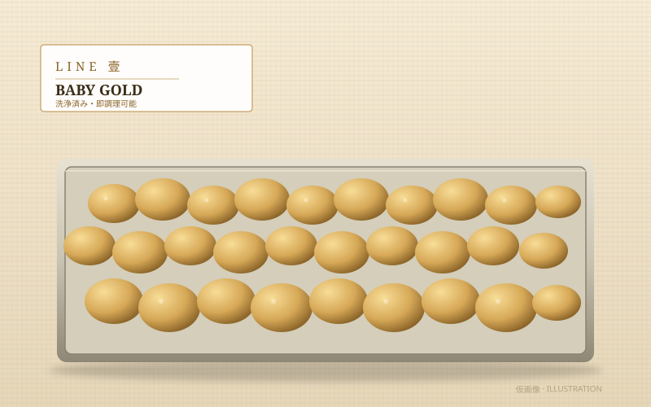
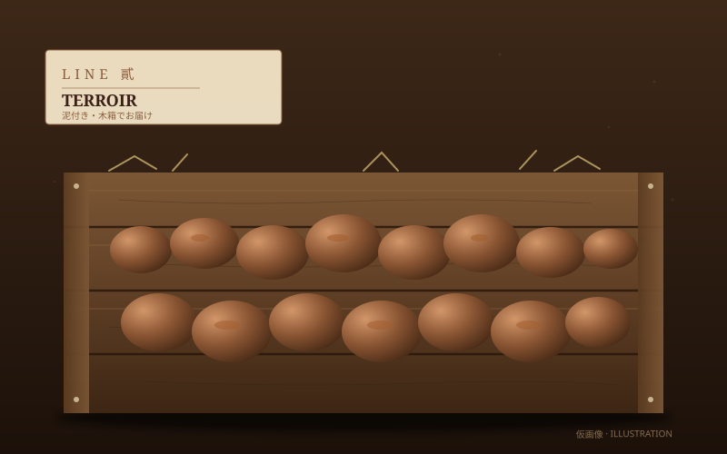
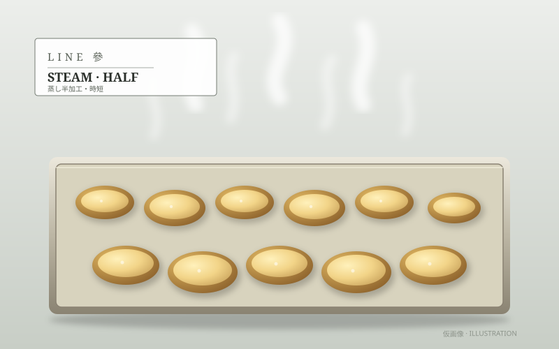

LINE 壹
ザ・ベビーゴールド
洗浄済み・即調理可能
B2Bの主力ライン。下処理の手間なく、ディナータイム直前の仕込みにも間に合います。フリット、ソテー、アヒージョに。
- 業務用価格
- ¥2,400 /kg〜
- 最小ロット
- 5 kg〜
- 納品サイクル
- 週1〜2 回
向いている業態：ビストロ／居酒屋／カフェ
このラインで相談する →
島ポテこは、飲食店さま向けに三つのラインをご用意しています。超鮮度、演出力、安定供給。料理の仕上がりと、お客さまの物語体験を、一段上へ。
店舗のスタイルとオペレーションに合わせて選べる、三つの仕様。いずれも壱岐の朝掘りをベースにお届けします。

B2Bの主力ライン。下処理の手間なく、ディナータイム直前の仕込みにも間に合います。フリット、ソテー、アヒージョに。

赤土をまとったまま、木箱でお届け。「壱岐の畑から届いた、その日の一粒」を、卓上の演出として。シェフのお話にも説得力を。

スチーム済みの半加工品。仕上げの焼きや和え物に、すぐ展開できます。忙しいオペレーションに、安定した品質を。
収穫したその日に梱包・発送。香りと食感の旬を逃しません。
糖度の低い新じゃがだから、フリットが美しく仕上がります。
産地ストーリーは、メニューを語る素材にもなります。
島内の複数農家と連携し、シーズン中の安定供給を設計しています。
島ポテこを選んでくださったシェフの方々から、メニューと使い方のお話を伺いました。
朝掘りの香りが、皿を出す瞬間まで残る。フリットの黄金色は他の追随を許しません。コースの一品として、自信を持って語れる素材です。
泥付きのまま卓上にお出しすると、お客さまの目の色が変わります。「壱岐の畑から、今朝届きました」の一言が、料理を語る入口になる。
うちは70席を3人で回すので、半加工があるかどうかは死活問題。スチーム・ハーフは、忙しい金土の救世主になっています。
壱岐の二期作に合わせた、シーズンごとの収穫・出荷カレンダー。事前予約は3ヶ月前から承ります。
※ 天候・畑の状態により前後する場合がございます。最新の入荷状況は担当よりご連絡いたします。
下記のフォームからご希望ラインと想定数量をお知らせください。島ポテこ担当より1〜2営業日以内にご連絡いたします。
ご希望があれば、試作用のサンプルをお送りします。シェフのメニュー構想に合わせた使い方もご提案可能です。
ご発注量・納期に応じたお見積もりをお出しします。月次請求書でのお支払いにも対応いたします。
シーズン中、ご希望の頻度で産地直送いたします。畑の状況や入荷情報も随時お知らせします。
業務用の仕入れ、試作サンプル、メニュー提案のご相談まで、お気軽にお問い合わせください。